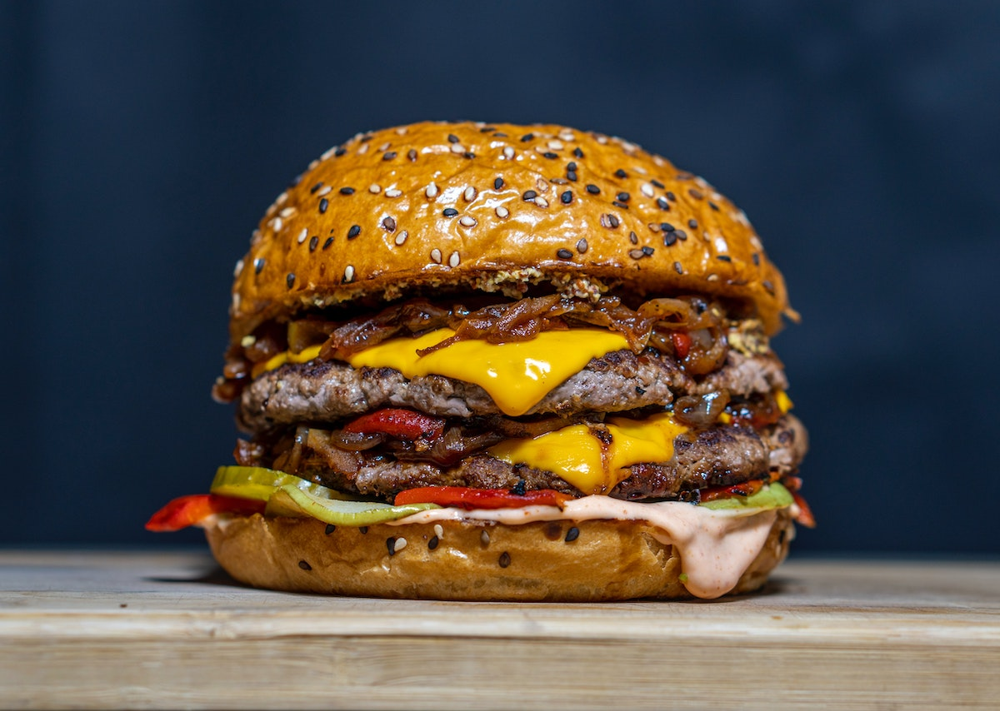

Recette de Burger Maison
Home

Description du plat
Plat incontournable, facile à réaliser, très gourmand
Ingrédient
- Tomate
- Oignon
- Emmental
- Viandes hachée
- Cornichons
- Salade verte
- Mayonnaise
- Ketchup
- Pain à hamburger
Etapes de préparation
- Tranchez de fines lamelles d'emmental afin de recouvrir la partie inférieure de votre pain à burger. Mettez ensuite au four sur le mode grill le temps de faire fondre le fromage.
- Coupez l'oignon de manière à obtenir de fines et grandes lamelles. Coupez la tomate en grandes tranches également. Coupez 2 à 3 grandes feuilles de salade en lamelles fines et longues.
- Hachez en tout petits morceaux les cornichons et mélangez-les à la mayonnaise préalablement préparée.
- Mettez au four la partie supérieure de votre pain à burger.
- Faites ensuite cuire à votre convenance votre steak haché dans une poêle avec du beurre ou de l'huile ou utilisez un grill. Assaisonnez généreusement en sel et poivre.
- Sortez ensuite les deux parties de votre pain à burger. Disposez sur la partie avec le fromage fondu votre steak haché sur lequel vous allez étaler votre mayonnaise. Déposez ensuite une à deux grandes tranches de tomate puis la salade verte.
- Sur la partie supérieure de votre pain, étaler du ketchup de manière à le recouvrir complètement, puis disposez vos lamelles d'oignons.
- Refermez. Bon appétit !